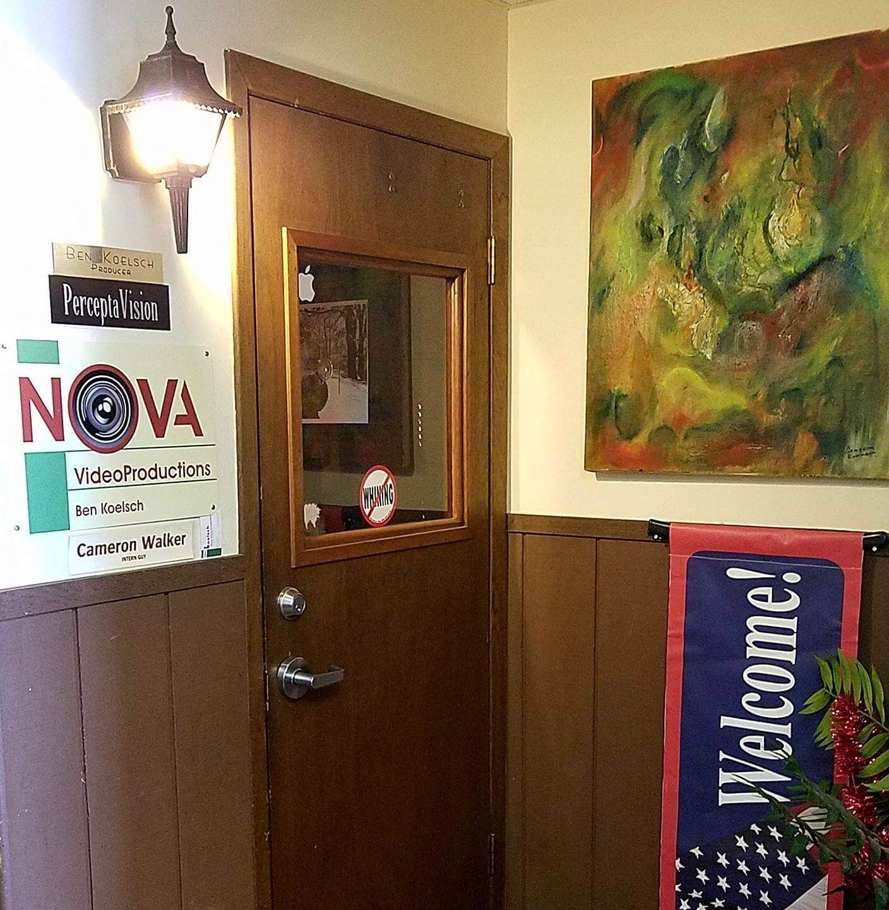

Contact
About
Portfolio
Home
×
Home
Portfolio
About
Contact
Nova Video Productions
Video Production: Promotional, Tourism, Family Events, Tiny Little Projects to Great Big Projects
Check Our Portfolio
WE RECORD AND EDIT VIDEOS FOR EVENTS
We are a video production business located in Richland Center, WI.
Contact us
to request a quote
